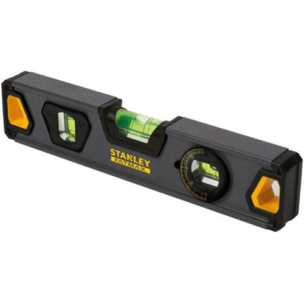

More Website Templates @ TemplateMonster.com - July 30, 2014!

Un nivel es una herramienta manual que se utiliza para establecer la horizontalidad o verticalidad de un elemento. Existen muchos tipos de niveles en el mercado pero se pueden resumir en dos grandes grupos, los niveles de burbuja tradicionales y los niveles láser.
10,00 $.
Sirve para hacer agujeros en materiales duros mediante una broca; la broca se hace girar (por procedimientos mecánicos o eléctricos) y horada la superficie.
50,00 $
Es una especie de sierra, generalmente usada para cortar varios tipos de metal. Su diseño normal consiste en un motor y una rueda de corte colocados en un brazo giratorio, conectados a una base fija.
300,00 $
Es una máquina herramienta que consiste en un motor eléctrico a cuyo eje de giro se acoplan en uno o ambos extremos discos sobre los que se realizan diversas tareas, según sea el tipo de disco que se monte en la misma.
200,00 $
Es la herramienta que no puede faltar en el mantenimiento de redes eléctricas e instalaciones hidráulicas, utilizándose también en servicios de mecánica. Por tener regulado de la apertura, es una herramienta extremadamente versátil.
7,00 $.
Las pinturas se aplican sobre determinadas superficies, con la finalidad de revestir, dar color y proteger de los agentes corrosivos.
17,00 $
La llave inglesa, también denominada llave francesa, llave ajustable o llave de expansión, es una herramienta manual utilizada para aflojar o ajustar tuercas y tornillos.
20,00 $
La soldadora es una máquina que se utiliza para la fijación de materiales.
150,00 $
Es una herramienta de percusión utilizada para golpear directamente o indirectamente una pieza, causando su desplazamiento. El uso más común de esta herramienta suele ser para clavar, calzar partes o romper una pieza.
30,00 $
{kind=link}
{kind=link}
{kind=link}
{kind=link}
{kind=link}
{kind=link}
{kind=link}
{kind=link}
{kind=link}